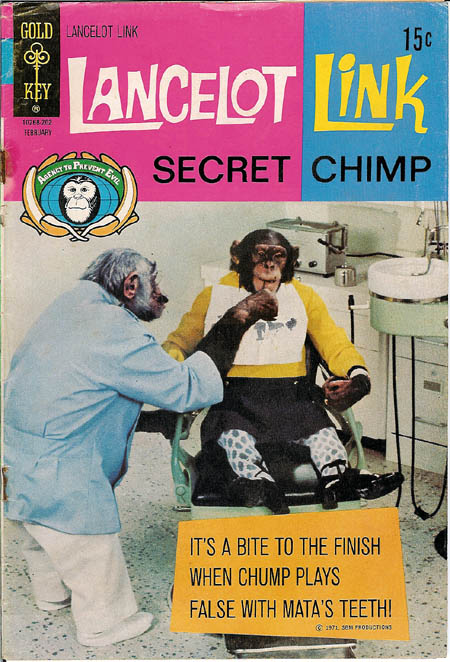

Updating a Nikola Shortcode Plugin
Table of Contents

Source: Brian (CC License)/Unmodified
Beginning
These are some notes to help me remember what I did to alter a Nikola shortcode plugin. A while back I looked into using their doc reStructured Text extension ("role"?) which automatically creates links to other posts by looking up the slug or title that you pass to it, but since I switched to using org-mode instead of restructured text I couldn't use it. Then I found out the other day that they built a shortcode that allows you to use it in other formats and when I tried it it worked - mostly.
A tag that looks like this:
{{% doc %}}2-nikola-inter-site-links{{% /doc %}}
Gets turned into this: Nikola Inter-Site Links.
The problem is that, while the doc shortcode supports giving the link an alternate title, it expects restructured-text formatting. e.g. `alternate title<some-slug>`. Why is this a problem? Well, I didn't look into where it's happening, but when the text within the {{% doc %}} tags gets sent to the shortcode code (meaning the python plugin code) for processing it converts the angle brackets (< and >) to HTML character entities (e.g. the < becomes <) but the regular expression in the code that extracts the alternate title is looking for the braces (presumably the role is processed differently from the shortcode) anyway, I was trying to figure out some workarounds but then I looked at the code and it looked fairly easy to customize so I decided I would so that I could learn how to do it (and have a way to use alternative titles in org-mode). So, here it goes.
Middle
I'm going to call my shortcode lancelot. I was going to call it link, but that seems like it might clash with something else, either now or in the future, so I decided to name it after Lancelot Link, Secret Chimp instead. Hopefully that won't end up conflicting with anything.
The Plugin File
The first thing I did was poke around in the nikola folders for something I could copy. I decided to use the existing gist shortcode to start with. Why not use doc? because it's in a different folder and inherits from the RestExtension which didn't seem like what I wanted, although maybe that's what makes the angle brackets work, but anyway, the gist seemed like a good place to start. They appear to be using yapsy for the plugin system, which requires two files for your plugin, a python file where you define the plugin and a plugin-info file (which looks like an ini file). So to start I copied nikola/plugins/shortcode/gist.plugin and renamed it lancelot.plugin then edited it to look like this.
[Core]
name = lancelot
module = lancelot
[Nikola]
PluginCategory = Shortcode
[Documentation]
author = The Cloistered Monkey
version = 0.1
website = https://necromuralist.github.io/
description = Variant of the doc shortcode that allows alternate titles for non-restructured text formats.
Seems easy enough. Now to the plugin code.
The Plugin Code
According to the documentation on creating a shortcode, the requirements are that you create a plugin that inherits from the ShortcodePlugin (you'll find it in the nikola/plugin_categories.py file if you want to check it out) and define the handler method that handles the shortcode and returns a tuple of (output, dependencies). The output is the text that will replace the shortcode in the document and the dependencies is a list of files that nikola will use to check if something is out of date (I don't use it here).
There are three required named arguments for the handler method:
site: an object that you can use to check the state of the sitedata: The text between the shortcode tags (if it uses both opening and closing tags)lang: the current language
In addition, any attributes added within the shortcode tag will be passed into the handler method by position or keyword. Anyway, since I copied the doc code I didn't actually read this until just now, but maybe it's good to know. Onward.
The next thing to do was to create lancelot.py in the same folder as the lancelot.plugin file. The basic definition of class (and the start of the file) looks more-or-less the same for all the plugins.
# -*- coding: utf-8 -*-
# This file is public domain according to its author, the Cloistered Monkey
"""Shortcode for non-restructured text inter-site links."""
from nikola.plugin_categories import ShortcodePlugin
class Plugin(ShortcodePlugin):
"""Plugin for non-rst inter-site links."""
name = "lancelot"
So, other than some doc-strings all you have to do is set the name and then the handler, which we'll do next.
Stealing From the doc
The file that I stole most of the code from is located in nikola/plugins/compile/rest/doc.py. The Plugin class in that file is handling both the restructured text role and the shortcode so we don't need all of it. According to the documentation I linked to above, the set_site method is used to tell nikola to use something other than the handler method, and in this case the author used it to register the functions for the two things it's handling.
def set_site(self, site):
"""Set Nikola site."""
self.site = site
roles.register_canonical_role('doc', doc_role)
self.site.register_shortcode('doc', doc_shortcode)
doc_role.site = site
return super(Plugin, self).set_site(site)
If you look at the line self.site.register_shortcode('doc', doc_shortcode) you can figure out that we need to steal from a function named - wait for it… doc_shortcode. Here's what's in that function:
def doc_shortcode(*args, **kwargs):
"""Implement the doc shortcode."""
text = kwargs['data']
success, twin_slugs, title, permalink, slug = _doc_link(text, text, LOGGER)
if success:
if twin_slugs:
LOGGER.warning(
'More than one post with the same slug. Using "{0}" for doc shortcode'.format(permalink))
return '<a href="{0}">{1}</a>'.format(permalink, title)
else:
LOGGER.error(
'"{0}" slug doesn\'t exist.'.format(slug))
return '<span class="error text-error" style="color: red;">Invalid link: {0}</span>'.format(text)
It looks pretty straight-forward except it's using two things not defined within it - LOGGER and _doc_link. The LOGGER is just an import so we can just change the start of our file to grab it. The doc_link is a function in the same file as doc_shortcode. My first thought for the _doc_link was that since it's a standalone function I could just import it and call it. That turned out to have a small problem though - right in the middle of _doc_link is this for loop:
for p in doc_role.site.timeline:
if p.meta('slug') == slug:
if post is None:
post = p
else:
twin_slugs = True
break
What you'll notice is that the doc_role function has an attribute site. Well, it doesn't really, until it's set in that set_site method above. So, okay, maybe I could figure out some way to set it… or maybe not, I don't know but even if I could it seems like it'd get kind of convoluted, and who knows what changes the original author might make in the future, it just seemed like it'd make more sense to re-implement it myself.
The Plugin
So, first a different start to our file, this time with the LOGGER and slugify imported (the slugify was in _doc_link which I'm re-defining later).
# -*- coding: utf-8 -*-
# This file is public domain according to its author, the Cloisted Monkey
"""Shortcode for non-restructured text inter-site links.
Re-write of the ``doc`` plugin to allow alternative titles outside of RST"""
from nikola.plugin_categories import ShortcodePlugin
from nikola.utils import LOGGER, slugify
class Plugin(ShortcodePlugin):
"""Plugin for non-rst inter-site links."""
name = "lancelot"
lancelot_link
To replace the _doc_link I made a new function called lancelot_link which I'll be looking at in parts. First up is the function declaration.
def lancelot_link(site, slug, title):
"""process the slug, check if it exists or is duplicated
if `title` is None this will grab the post-title
Args:
site: the Nikola object
slug: the text between the shortcode tags
title: the title passed in by the user (if any)
Returns:
tuple (success, has duplicate slugs, title, permalink, slug)
"""
The interface wants the objects that nikola passes into the handler method - the site object , the data (renamed slug) and the title.
Note: I'm not indenting the rest of the code in the post but imagine it's indented four spaces.
- Slugification
The first thing the function does is split out any fragments that might have been attached and "slugifies" the slug (makes sure it's ASCII and has only alphanumeric characters).
if '#' in slug: slug, fragment = slug.split('#', 1) else: fragment = None slug = slugify(slug)
- Find the Post
Next it checks to see if the slug refers to an actual page on the site and if there are duplicate slugs. If the page doesn't exist, then it short-circuits the function so the
handlercan return some error text instead of a link. If it does exist it saves thepostobject for the next step (using the first post in the timeline if there were duplicates).twin_slugs = False post = None for p in site.timeline: if p.meta('slug') == slug: if post is None: post = p else: twin_slugs = True break if post is None: return False, False, title, None, slug
- The Title
If the user didn't pass in an alternative title this grabs the title that was given to the post we're linking to.
Note: The
docshortcode raises then catches aValueErrorexception if there's no matching post. I had thought that this was for logging, but that doesn't appear to be the case so I took it out. But since I don't know what it was doing in the first place I might be breaking something. Not that I can tell, though.if title is None: title = post.title()
- The Permalink
Now we grab the permalink.
permalink = post.permalink() if fragment: permalink += '#' + fragment
- The Return
And finally we do the return dance to answer some questions for the
handler:- Did we find the post?
- Were there duplicate posts with the same slug?
- What's the text to display for the link?
- What's the address for the anchor tag?
- What's the correct slug?
return True, twin_slugs, title, permalink, slug
The
slugis only for the logging messages.
The handler
Now I'll define the handler that's called by nikola. This is a method of the Plugin class that I started above, but I'm showing it after the lancelot_link function since it mostly just calls lancelot_link and creates the output from what it returned. I originally had it all in the same method (and maybe I'll put it back at some point). But I thought it was a little easier to read this way, especially as I referred back to the original doc plugin to see what's going on.
def handler(self, title=None, site=None, data=None, lang=None):
"""Create an inter-site link
Args:
title: optional argument to specify a different title from the post
Returns:
output HTML to replace the shortcode
"""
success, twin_slugs, title, permalink, slug = lancelot_link(
site, data, title)
if success:
if twin_slugs:
LOGGER.warning(
'More than one post with the same slug. '
f'Using "{permalink}" for lancelot shortcode')
output = f'<a href="{permalink}">{title}</a>'
else:
LOGGER.error(
f'"{slug}" slug doesn\'t exist.')
output = ('<span class="error text-error" style="color: red;">'
f'Invalid link: {data}</span>')
return output, []
One thing to note here is that the original doc plugin only returns the output, not an empty list, even though the documentation says you should. It works either way, but I noticed the gist plugin returned an empty list with the output so I followed, like a lemming to the sea.
Checking It Out
Now let's give it a dry run.
Does it work like the original doc?
If we put this in the post: {{% lancelot %}}2-nikola-inter-site-links{{% /lancelot %}}
We get this:
Does it accept a title?
Now, what this was all about.
{{% lancelot title="An old post about linking to another post." %}}2-nikola-inter-site-links{{% /lancelot %}}
Gives us:
An old post about linking to another post.
And if you forget the name of the parameter, you can just pass in the alternate title instead.
{{% lancelot "Without the 'title=' part" %}}2-nikola-inter-site-links{{% /lancelot %}}
Gives this:
What if the slug doesn't exist?
{{% lancelot title="Oops." %}}this-error-is-on-purpose-ignore-it{{% /lancelot %}}
Gives us:
Invalid link: this-error-is-on-purpose-ignore-it
Note that adding this error to this post means it shows up in the logging every time I re-build. I hope I don't forget and try and hunt it down later.
One More Thing
When I originally was trying to figure this out I put the lancelot files in the shortcodes folder next to the gist files (in the virtualenv, so I knew it was a bad idea, even as I did it) but while I was re-writing them for this post I wanted a place to stash the files so I put them in the plugins folder that sits in the site repository next to the conf.py file - which already existed because that's where nikola put the org-mode plugin - and when I first re-built the site with the code only partially written, it raised an Exception because it turns out that the place to put plugins, including shortcode plugins, for nikola/yapsy to find them is in the plugins folder. Imagine that.
Also, to use an interactive debugger (like my favorite one, pudb) you need to change the verbosity when you build the site to 2.
nikola build -v 2
Otherwise it captures the stdout and you won't see the debugger (it will just look like it hung-up). The other thing is if you see an error something like this:
[2020-07-28 20:53:44] ERROR: Nikola: Shortcode error: Syntax error in shortcode 'lancelot' at line 426, column 27: expecting whitespace!
It more than likely mean that the error is actually in the tag - no space after the first % or before the second one or one time I chopped off the end of a tag when copying and pasting and it gave the same error - it seems to be a generic error that means "check the tag".
I guess that's actually three more things.
End
So, that's my first foray into making a nikola plugin. I've been using nikola for a while now, but I never really looked at the code before. It's nice to see that the plugin system is so easy to use.